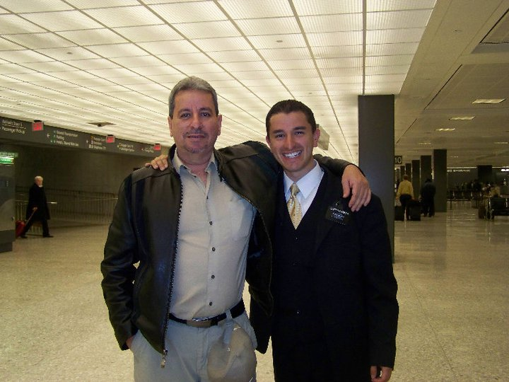

Rolando Falabella | WDD 130
I was born in Guatemala City, Guatemala and at the age of four my family moved to Virginia where I was raised. I served a mission at the age of seventeen, turning eighteen while in the Provo MTC. I served in the Denver Colorado North Mission for two years. After my mission I moved back to Guatemala where I now reside and am raising my family. I currently work at a tech company, reason why I've enrolled for a Software Development degree in BYU Idaho. My hobbies are playing basektball, spending time with my family, and learning new things in general.